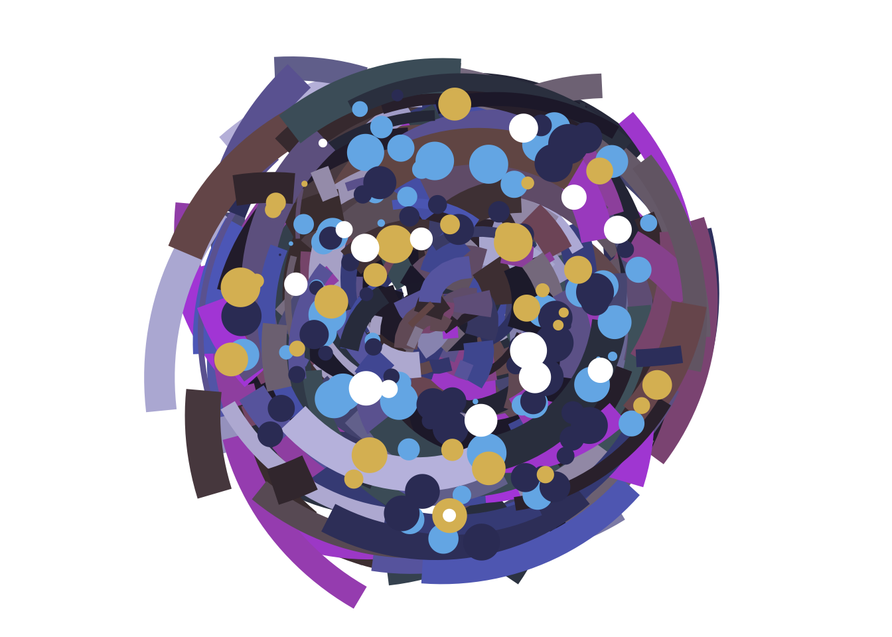
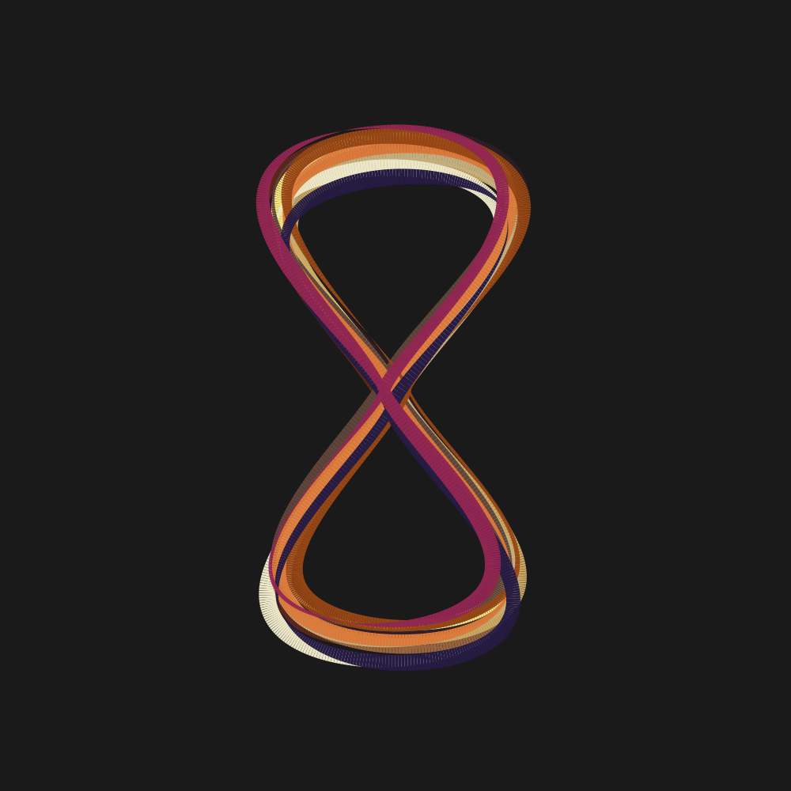
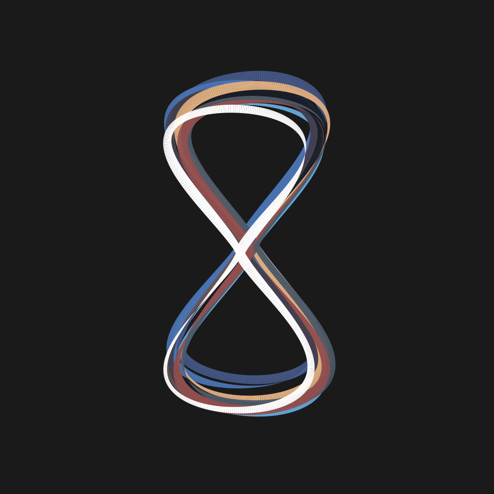
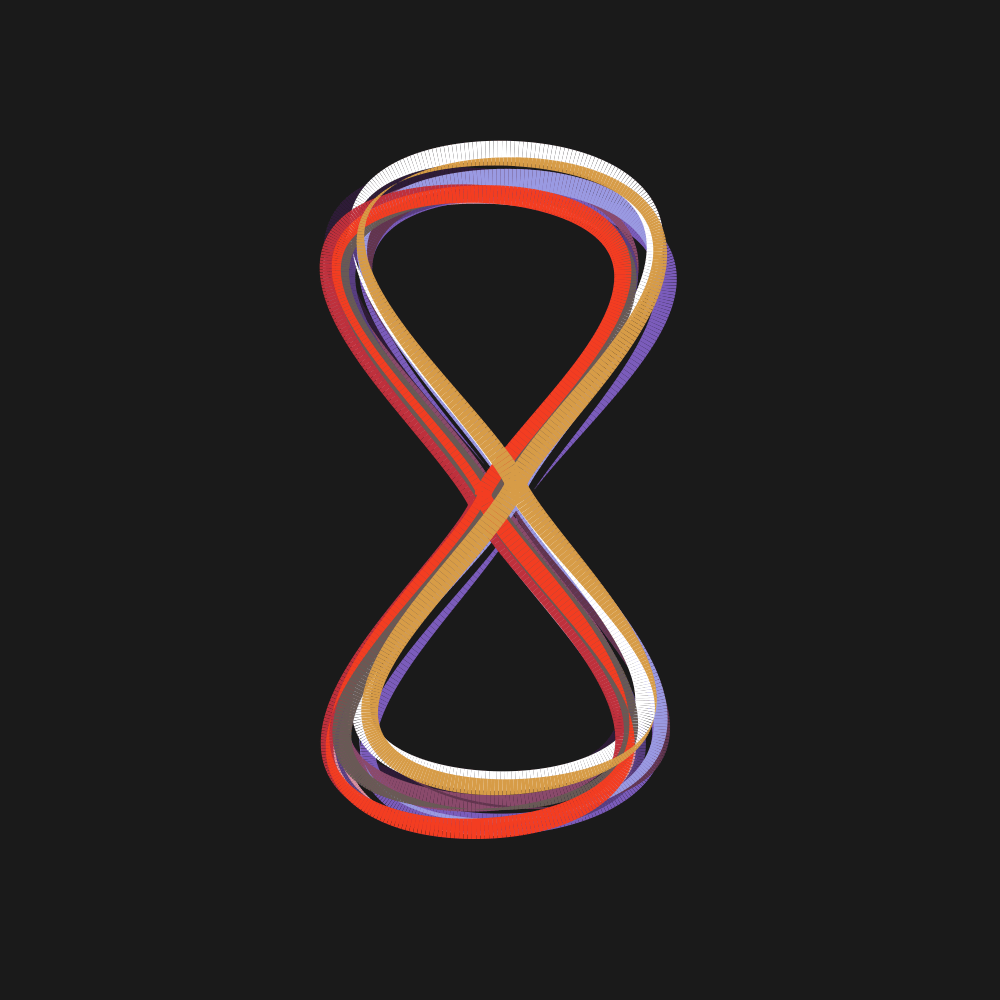

# load necessary libraries
library(dplyr)
library(purrr)
library(tidyr)
library(tibble)
library(ggplot2)
library(ambient)
library(tictoc)
library(ggthemes)
library(gifski)
library(scales)Libraries
For Art Piece 1
# defines two R functions: `sample_data` for generating random data and `polar_styled_plot` for creating a ggplot2 visualization.
# Function 1: sample_data
# Generates a tibble (a modern data frame) with random numeric and factor data,
sample_data <- function(seed = NULL, n = 100){
if(!is.null(seed)) set.seed(seed)
# Create a tibble (data frame) with 'n' rows.
dat <- tibble(
x0 = runif(n),
y0 = runif(n),
x1 = x0 + runif(n, min = -.2, max = .2),
y1 = y0 + runif(n, min = -.2, max = .2),
shade = runif(n),
size = runif(n),
shape = factor(sample(0:22, size = n, replace = TRUE))
)
# The function returns the created 'dat' tibble.
}
# Function 2: polar_styled_plot
# Creates a ggplot2 object designed for a specific "Perlin noise" aesthetic
polar_styled_plot <- function(data = NULL, palette) {
ggplot(
data = data,
mapping = aes(
x = x0,
y = y0,
xend = x1,
yend = y1,
colour = shade,
size = size
)) +
# Transforms the Cartesian coordinate system into a polar coordinate system.
coord_polar(clip = "off") +
# `oob = scales::oob_keep`: Instructs ggplot to keep out-of-bounds data when transforming coordinates
scale_y_continuous(
expand = c(0, 0),
limits = c(0, 1),
oob = scales::oob_keep
) +
# Customizes the x-axis angular axis in polar coordinates
scale_x_continuous(
expand = c(0, 0),
limits = c(0, 1),
oob = scales::oob_keep
) +
# Defines a continuous color scale using a custom gradient.
scale_colour_gradientn(colours = palette) +
# Defines a continuous size scale, mapping data 'size' values to a visual
scale_size(range = c(0, 10)) +
# Uses a minimalist theme that removes all plot background, axis lines, and labels.
theme_void() +
guides(
colour = guide_none(),
size = guide_none(),
fill = guide_none(),
shape = guide_none()
)
# The function returns the created ggplot object.
}For Art Piece 2
# Function to visualize a polygon using ggplot2.
show_polygon <- function(polygon, show_vertices = TRUE, ...) {
# Create a ggplot object from the 'polygon' data
pic <- ggplot(polygon, aes(x, y)) +
geom_polygon(colour = "black", fill = NA, show.legend = FALSE, ...) +
coord_equal() +
theme_void()
# Optionally add points to show the vertices of the polygon.
if(show_vertices == TRUE) {
pic <- pic + geom_point(colour = "black", size = 2)
}
return(pic)
}
# Function to calculate the x-coordinate for an hourglass shape.
hourglass_x <- function(angle) {
# Formula I played with until it looked right.
x <- sin(angle) * abs(cos(angle))^1.2
return(x)
}
# Function to calculate the y-coordinate for an hourglass shape.
hourglass_y <- function(angle) {
y <- cos(angle)
return(y)
}
# Creates a tibble representing the base hourglass shape.
hourglass_shape <- tibble(
angle = seq(0, 2 * pi, length.out = 50),
x = hourglass_x(angle),
y = hourglass_y(angle)
)
# Normalizes a numeric vector to a specified range (min, max).
normalize_radius <- function(x, min, max) {
scales::rescale(x, from = c(-0.5, 0.5), to = c(min, max))
}
# Generates data for a single "Perlin noise" hourglass.
perlin_hourglass2 <- function(n = 100,
freq_init = 0.3,
octaves = 2,
r_min = 0.5,
r_max = 1,
w_min = 0,
w_max = 4,
rot = 0,
x_shift = 0,
y_shift = 0,
id = NA,
seed = NULL) {
if(!is.null(seed)) set.seed(seed)
tibble(
angle = seq(0, 2*pi, length.out = n),
radius = fracture(
x = cos(angle),
y = sin(angle),
freq_init = freq_init,
noise = gen_perlin,
fractal = fbm,
octaves = octaves
) |>
normalize_radius(r_min, r_max),
# Calculates final x and y coordinates based on radius, hourglass shape, and shifts.
x = radius * hourglass_x(angle) + x_shift,
y = radius * hourglass_y(angle) + y_shift,
width = fracture(
x = cos(angle + rot),
y = sin(angle + rot),
freq_init = freq_init,
noise = gen_perlin,
fractal = fbm,
octaves = octaves
) |>
normalize(to = c(w_min, w_max)),
id = id
)
}
# Generates data for multiple Perlin hourglasses with scatter and color.
perlin_hourglass_data_2 <- function(nhourglasses = 10, scatter = 0.05, palette = NULL) {
# Checks if the provided palette has enough colors for all hourglasses.
if (length(palette) < nhourglasses) {
stop("Palette must have at least as many colors as nhourglasses")
}
hourglass_settings <- tibble(
id = 1:nhourglasses,
n = 500,
r_min = 0.35,
r_max = 0.4,
w_min = -10,
w_max = 10,
x_shift = runif(nhourglasses, -scatter / 2, scatter / 2),
y_shift = runif(nhourglasses, -scatter / 2, scatter / 2),
rot = runif(nhourglasses, -pi, pi)
)
hourglass_settings |>
pmap_dfr(perlin_hourglass2) |>
group_by(id) |>
mutate(
shade = palette[id], # Assigns a color from the palette based on ID.
width = abs(width)
)
}
# Generates a single ggplot frame (image) of the hourglasses.
generate_one_frame <- function(dat) {
pic <- dat |>
ggplot(aes(x, y, group = id, size = width, colour = shade)) +
geom_path(show.legend = FALSE) +
theme_void() +
scale_x_continuous(expand = c(0, 0)) +
scale_y_continuous(expand = c(0, 0)) +
scale_colour_identity() +
scale_size_identity() +
coord_fixed(xlim = c(-0.6, 0.6), ylim = c(-0.6, 0.6))
print(pic)
}
rotate_vector <- function(x, percent) {
len <- length(x)
ind <- ceiling(len * percent)
if (ind == 0) return(x)
if (ind == len) return(x)
c(x[(ind + 1):len], x[1:ind])
}
# Generates all frames for an animation.
generate_all_frames <- function(dat, nframes = 100) {
for (frame in 1:nframes) {
dat_frame <- dat |>
group_by(id) |>
mutate(width = rotate_vector(width, frame / nframes))
# Generates and prints the plot for the current frame.
generate_one_frame(dat_frame)
}
}
# Main function to create and save the animated Perlin hourglass GIF.
animated_perlin_hourglass_2 <- function(palette_name, palette, ...) {
save_gif(
expr = perlin_hourglass_data_2(palette = palette, ...) |> generate_all_frames(),
# creates the output GIF filename
gif_file = paste0("animated-perlin-hourglass-", palette_name, ".gif"),
height = 1000,
width = 1000,
delay = 0.1,
progress = TRUE,
bg = "#222222"
)
invisible(NULL)
}# creates the desired color palettes for my hourglasses
sandstorm_ekko <- c("#733726", "#3d2934", "#a87750", "#f3e791", "#d4b677", "#cebb92", "#f0ebd2", "#73564a", "#e38d4a", "#a75919", "#322755", "#a53a65")
pulsefire_ekko <- c("#dbcdc9", "#2b3247", "#576b95", "#76bae1", "#5b89c1", "#7f6565", "#545061", "#202531", "#e6bc92", "#606c7a", "#a46360", "white")
starguardian_ekko <- c("#e4a6b3", "#3e2848", "#8e74c7", "#9d5f7e", "#6c5294", "#764761", "#aaade8", "white", "#cd464c", "#7c6d68", "#f8552a", "#e0ab58")Art Gallery
Piece 1
Title: Chronobreak
# generate sets of sample data for different point colors and segments
dat1 <- sample_data(n = 500, seed = 123)
dat2 <- sample_data(n = 50, seed = 456) |>
mutate(y0 = .3 + y0 * .6, y1 = .3)
dat3 <- sample_data(n = 50, seed = 619) |>
mutate(y0 = .3 + y0 * .6, y1 = .3)
dat4 <- sample_data(n = 30, seed = 720) |>
mutate(y0 = .3 + y0 * .6, y1 = .3)
dat5 <- sample_data(n = 15, seed = 70) |>
mutate(y0 = .3 + y0 * .6, y1 = .3)
# create a polar styled plot with a defined color palette.
polar_styled_plot(palette = c("#b453e1", "#745853", "#5e6ec4", "#373b66", "#c2c0e2", "#4b3a3d", "#221f35", "#4f656f" )) +
geom_segment(
data = dat1 |> mutate(linewidth = size * 3)
) +
geom_point(
data = dat2 |> mutate(linewidth = size * 2),
colour = "#74b5e9"
) +
geom_point(
data = dat3 |> mutate(linewidth = size * 2),
colour = "#373b66"
) +
geom_point(
data = dat4 |> mutate(linewidth = size * 2),
colour = "#dcbb63"
) +
geom_point(
data = dat5 |> mutate(linewidth = size * 2),
colour = "white"
)
Museum Description
This dynamic abstract piece, “Chronobreak,” draws inspiration from the kinetic abilities of Ekko, the boy who shattered time. While the entire gallery explores the various facets of this iconic character, this particular work delves into the very essence of his ultimate ability: Chronobreak.
The artwork visually articulates the temporal displacement Ekko undergoes, where he rewinds to a previous moment in time. The swirling array of fractured shapes and vibrant, multi-hued circles represents the “time particles” and the chaotic yet precise energies unleashed during this phenomenon. The varying shades within these circles are not merely decorative; they symbolize the different iterations of Ekko himself, existing simultaneously within the fabric of time as he maneuvers through it.
At its core, “Chronobreak” captures the explosive, circular visual effect that accompanies Ekko’s relocation. It portrays the initial expansion of temporal energy, followed by the dramatic implosion as he materializes, creating a powerful, concentrated burst. This piece serves as a vivid, abstract interpretation of the raw power and temporal mastery inherent in Ekko’s signature move, inviting viewers to contemplate the intricate dance of time and consequence.
Description of Code
This first art piece was created using Danielle Navarro’s sample_data() and polar_styled_plot() functions (slightly modified) to gain the desired effect.
I created two data sets, dat1 and dat2 using the sample_data() function. The main plotting function used was polar_styled_plot(). Within the polar_style_plot() I then called geom_segment() and geom_point() multiple times to add the particle effect stacking on top of the circle. I decided to use custom color hexes for each geom_point() to mimic the same colors on ekkos color palette.
Piece 2
Title: “It’s not how much time you have, it’s how you use it.”
# each call creates a new hourglass based on the previous palettes
animated_perlin_hourglass_2(nhourglasses = 12, palette_name = "sandstorm_ekko", palette = sandstorm_ekko)
animated_perlin_hourglass_2(nhourglasses = 12, palette_name = "pulsefire_ekko", palette = pulsefire_ekko)
animated_perlin_hourglass_2(nhourglasses = 12, palette_name = "starguardian_ekko", palette = starguardian_ekko)# display all graphics side by side
knitr::include_graphics("animated-perlin-hourglass-sandstorm_ekko.gif")
knitr::include_graphics("animated-perlin-hourglass-pulsefire_ekko.gif")
knitr::include_graphics("animated-perlin-hourglass-starguardian_ekko.gif")


Museum Description
This deeply personal and impactful three-panel artwork explores the fundamental essence of Ekko’s mastery over time, encapsulated by his iconic hourglass motif. Each of the three distinct hourglass forms, rendered in dynamic and fluid lines, symbolizes the Chronoshift device which is Ekko’s ingenious invention that allows him to manipulate the temporal flow.
Beyond its direct visual reference to Ekko’s lore, this piece serves as a vibrant homage to the character’s diverse aesthetics. The carefully selected color palettes within each hourglass are drawn from three of Ekko’s most beloved and visually striking skins, creating a rich tapestry of personal resonance for the artist. This intentional choice infuses the work with a layer of individuality, celebrating favorite iterations of the character while maintaining a cohesive thematic narrative.
“It’s Not How Much Time You Have, It’s How You Use It.” highlights Ekko’s philosophy. The dynamic and flashy presentation of the hourglasses reflects the character’s energetic and inventive spirit, while the implied flow within each form speaks to the constant motion and manipulation of time that defines him. This work is a testament to the character’s enduring impact, blending personal affinity with core thematic elements in a visually captivating display
Description of Code
This function was generated using several functions, mainly perlin_hourglass_data_2() and generate_one_frame(), which both build on dynamic shapes defined by Daniel Navarro.
The main change from the example of perlin_heart() was too the hourglass_x() and hourglass_y() which involved changing the angle of x. This was done just by trial and error to see what the angle looked the most like an hourglass.
The only other additional change was made to perlin_hourglass_data_2() which was changed to take in a palette instead of a seed. I designed it this way so that I could incorporate the color palette of my art characters outfits rather than a random seed of colors.